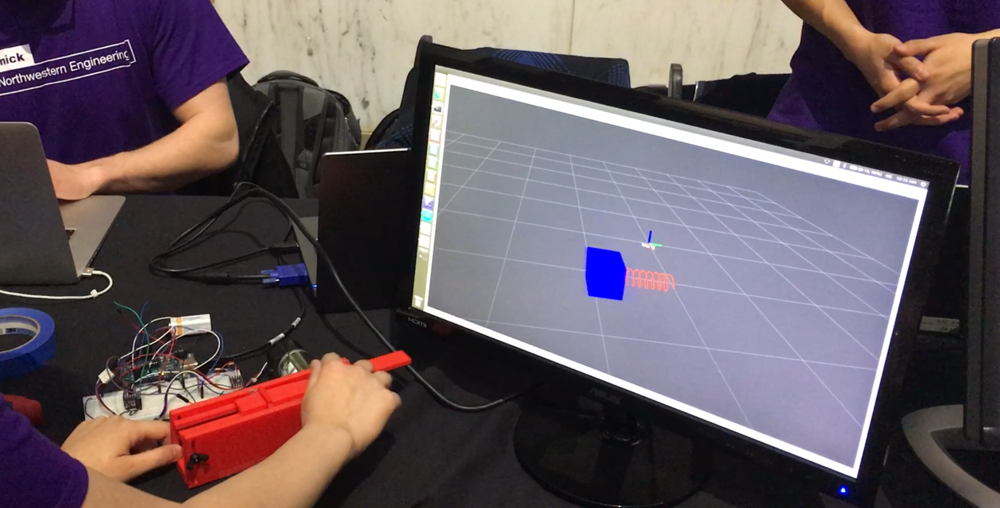
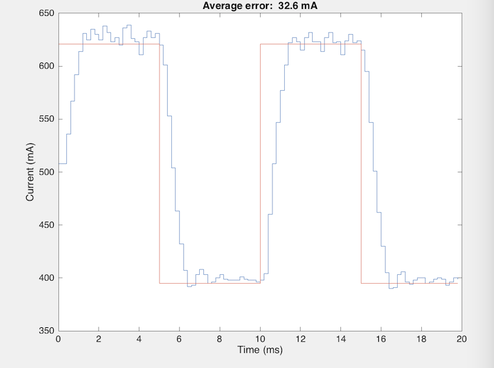
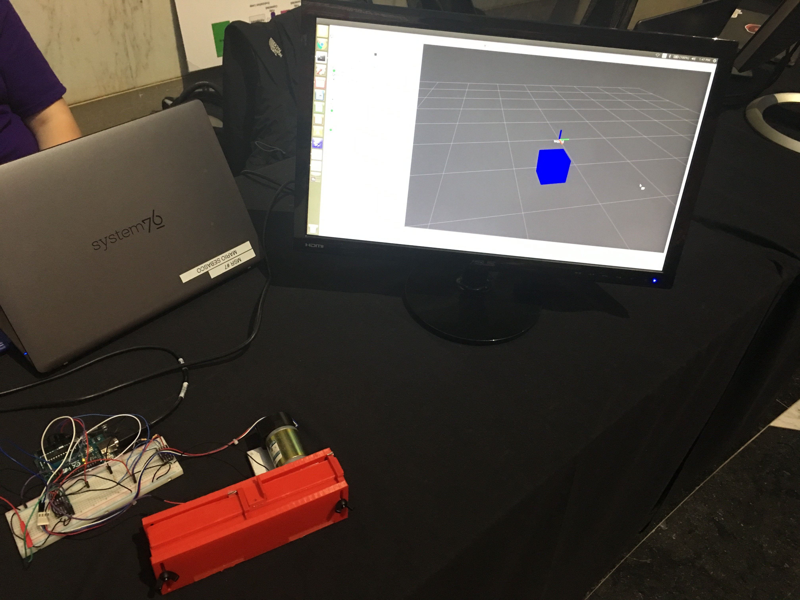

Impedance Controlled One DOF Haptic Simulations
Overview
As part of a quarter long individual project at Northwestern University, I set out to create a haptic feedback device capable of generating numerous virtual environments. The project incorporates impedance control of an electromechanical actuator, CAD and prototyping, and a ROS interface in order to provide a user with visual and haptic feedback of: springs, dampers, masses, walls, textures, and other possible one dimensional environments. Overall the proposal integrates several important subjects in robotics and engineering. The next few sections explain each in more detail.
Mechatronics
In order to provide the haptic feedback required, a permanent magnet, brushed, DC motor was used. The principal electronic components used to control the motor consisted of an Arduino UNO as the microcontroller, an H-Bridge (DRV8835), a current sense amplifier (MAX9918), and an optical encoder.
The controller consists of a PID loop. The loop controls the current of the motor. Since at stall the current is proportional to the torque the motor provides, robust current control is crucial in providing haptic feedback for mechanisms such as springs and walls which rely on force outputs. By controlling the force as a function of position, velocity, and acceleration (using an encoder) one is capable of making a user interact with virtual springs, dampers, masses, and more. The image shows desired versus actual current using the controller (data displayed in Matlab).
The culmination of these components forms the heart of the project. From here a spring can be generated by applying current proportional to encoder counts. A virtual wall consists of a high force area at a certain distance. Virtual texture can be generated with the use of high and low force areas interweaved one after the other.
Haptics
In the Expanding field of haptics, the desire to accurately and realistically replicate virtual environments has always been at the forefront of research. As a result, this project takes from several publications and applications.
In order to increase the perceived stiffness of a virtual wall, this project incorporates the notion of rate hardness introduced by D.A. Lawrence in 2002. Instead of increasing stiffness which in general cannot reach very high values due to restrictions in mechanical actuators, Lawrence proposes an increase in the ratio of initial force rate of change to impact velocity. In doing this, the study found the perceived stiffness of a wall felt by a person can be improved considerably. Furthermore, I have also borrowed from Stanford's online haptics course in generating virtual texture. By creating small regions of varying forces one perceives surfaces of varying roughness. With both position and force control, the kinesthetic senses of the human body can be manipulated fairly efficiently.
ROS Interface
In order to provide the user with a more realistic environment, and generate an overall more robust system, I decided to incorporate ROS as an interface with the computer. In doing so I am able to provide the user with core control over what they want to feel as well as actually providing them with visual feedback of the system motion. As can be seen in the image and the video, the user is provided with a visual interface using Rviz. Depending on the simulation one can see a mass, or a spring, or a combination making the overall experience more realistic and stimulating. The image provided displays a mass in Rviz which moves as the slider moves.
|  |  |
CAD and Fabrication
In designing a prototype, the objective was to give the user a linear path on which they could explore the virtual environment. The final device presented in the image is the result. The system uses a rack and pinion in order to translate the forces of the motor onto the users finger. Although the use of gears does introduce some noise possibly affecting the perception of virtual textures, the design allows the full force of the motor to be transferred without the possiblity for slip, thus generating the possibility for stronger virtual springs and walls.
One advantage to the design introduced is the ease in building. All of the parts in the CAD model can easily be 3D printed or laser cut. With the addition of a few nuts and bolts, and an adhesive, the system can be built in less than a day.